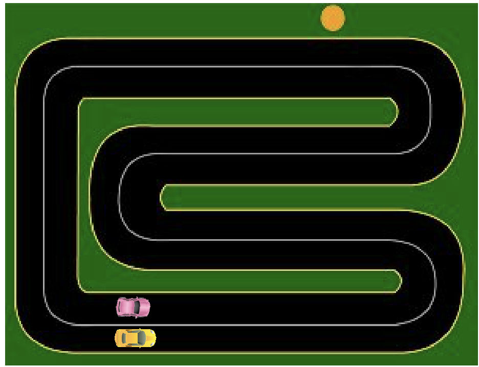
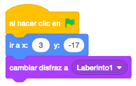
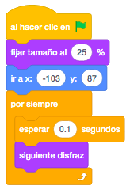
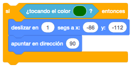
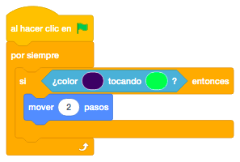
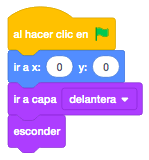
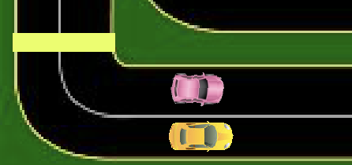
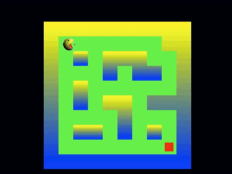

Para este juego nos harán falta los laberintos, el comecocos y un texto de Game Over.
Crearemos un escenario que sea totalmente negro.
Para descargar los objetos necesarios para el juego, lo haremos desde este link. Es un archivo comprimido con 3 objetos y 1 sonido. Lo descargaremos y lo descomprimimos en el directorio del alumno.
El juego consiste en que el comecocos se moverá por el laberinto hasta que toque el cuadrado rojo para pasar
al siguiente laberinto. Al tocar el cuadrado rojo del segundo laberinto, terminará el juego.
Empezaremos crear un escenario con el fondo negro en el que programaremos que el sonido que nos hemos descargado suene continuamente.

En los laberintos, lo posicionaremos y pondremos el primero de ellos.

Ahora programaremos el comecocos, que le daremos el tamaño adecuado para que pueda moverse por el escenario, lo posicionaremos el la parte superior izquierda del laberinto y continuamente estaremos alternando los disfraces.

El comecocos estará continuamente moviéndose y lo que haremos nosotros será cambiar la dirección con los cursores.

Si observamos al comecocos, vemos que tiene un pequeño punto cerca de la boca de color oscuro. Nos servirá
para identificar si está o no en el camino del laberinto o tocando la zona roja de llegada.
El comecocos se moverá solo cuando ese punto de color oscuro esté tocando el color verde del laberinto.

Ahora añadiremos a la programación que teníamos en el laberinto, que si se toca el color del punto del comecocos con el color rojo del laberinto, en el caso del primer laberinto, cambie al segundo y si se trata del segundo, enviar un mensaje de "Game Over" y detener el juego.

Finalmente añadiremos el objeto "Game Over" en el que al empezar el juego lo posicionaremos, lo traeremos a la capa delantera ya que lo pondremos encima de todo y lo esconderemos hasta que termine el juego.

Al recibir el mensaje "Game Over", mostraremos el objeto.

Otro reto que se puede añadir al juego es que en el segundo laberinto vaya más rápido que en el primero.
Y el juego quedaría así.

Para ver el juego terminado pulsa
aquí.
Para descargarte el juego terminado pulsa
aquí.